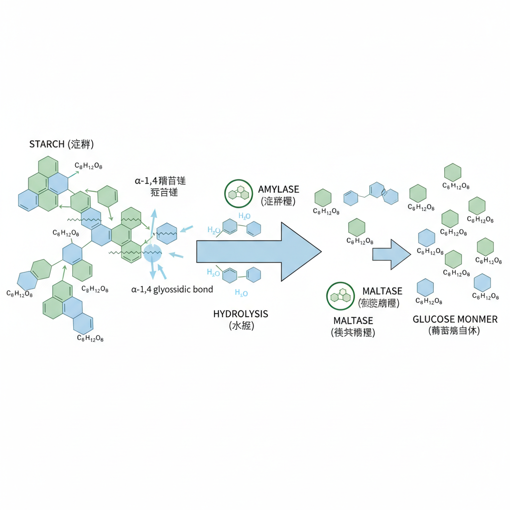
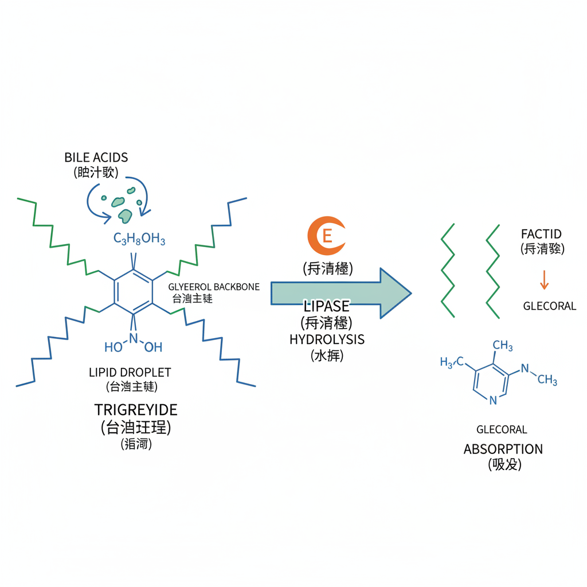

Buddha Jumps Over the Wall
Exploring the intricate biochemistry behind China's most legendary dish, where tradition meets molecular science

Exploring the intricate biochemistry behind China's most legendary dish, where tradition meets molecular science
Click on ingredients to explore their molecular composition
Choose an ingredient to view its molecular structure
Understanding how complex molecules become absorbable nutrients

Long protein polymers are broken down by pepsin and trypsin into individual amino acids

Complex starches are hydrolyzed by amylase into simple glucose molecules

Triglycerides are broken down by lipase into fatty acids and glycerol
Buddha Jumps Over the Wall represents a perfect harmony of culinary artistry and biochemical complexity. Each ingredient contributes unique macromolecules that our bodies meticulously break down through enzymatic reactions, transforming gourmet delicacies into essential nutrients.
Collagen breakdown into amino acids
Pepsin and trypsin activity
Intestinal uptake of monomers